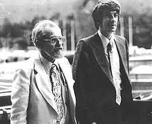
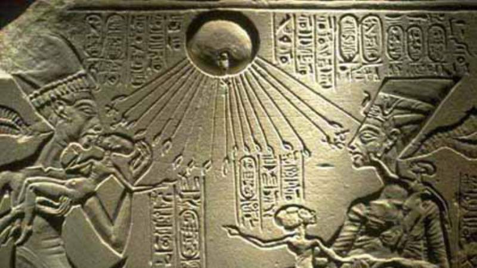

La ufologia surgio poco despues de la gran oleada de observaciones que trajo el fonal de la segunda guerra mundial
El 24 de junio de 1947,Kenneth Arnold informo sobre nueve inusuales objectos volantes en formacion sobre las mount Rainer, en Washintong.Trato de informar al FBI, pero al encontrar la oficina cerrada se dirigio al periodico local.El peiodista Bill Bequette durante la entrevista confundio la forma de los objectos, parecidos a un bumeran,
con la descripcion del movimiento que parecian hacer, es decir, como platillos rebotando sobre el agua.
Tras la observacion de Arnold, muchos otros ciudadanos declararon haber visto tambien objectos sobrevolando en los cielos de los Estados Unidos.Ante la posibilidad de que los sovieticos estuviecen violando el espacio aereo estadounidence la administracion de Harry S.Truman puso en marcha el Proyecto singo
Ellos a lo largo de la historia humana nos han visitado multiples culturas muy antiguas muestran informacion veridica de que asi es,simepre han estado ahy , ademas se cree que nos han modificado geneticamente desde el homo sapiens />
| Platillo | Ovni | Universo | UFO | Desconocido | Civilizacion |
| Localizacion de la Informacion | Datos de Observacion | Ubicacion del Ovni | Datos del Observador | Condiciones Atmosfericas | |
|---|---|---|---|---|---|
| Caracteristicas | Lugar,fecha,hora de la misma | Longitud y tiempo que duro | Angulo en el cielo,orientacion respoecto a los cuatro puntos cardinales y un dibujo con forma del objecto | Forma,sonido,color,movimiento,numero de objectos y brillo comparado con otro cuerpo conocido como el Sol,La Luna,Venus o similar. | Existentes en el momento de la observacion, sobre todo el grado de nubosidad, la temperatura, el viento,precipitaciones |
| Ejemplo: | Bogota,20 de mayo del 2020, 01:11 Am | 8 metros de largo y duro 20 minutos el evento | a 45 grados del sol desde el oriente, dibujo en forma alargada | forma alargada como cigarro,gris metal,tres objectos,brillo intenso luces naranjas, amarillasy rojas | clima 19 0centigrados, 187presipitacion de humedad y 138 nudos |